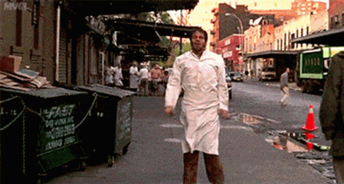
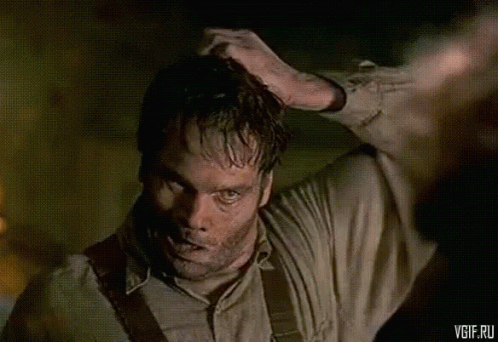

Certa vez um Deus Niilista que estava cansado de tomar conta do céu
, foi pro bar do mané para encontrar redenção alcoólica, e ao fazer isso ele teve um alto grau etílico e criou
uma entidade chamada "Sheiks" que organizou em um certo domingo uma reunião entre vários caras que frequentavam o bar.
Um deles o mongol master, também grande e comumente conhecido como "Pornô" ou "O Primeiro entre os Caídos", percebeu que a entidade sheiks havia sido um antigo humano
que frequentou várias feijoadas da organização chamada APAE.Certo tempo depois um discípulo do mongolismo do bar
do Mané, ficou vários anos frequentando o bar do Mané e o do Zé, para complementar a missão de monge mongol em suas
expedições. Este, era conhecido como "Cabelin", que era amigo do mongol master Porno, que por sua vez havia descoberto a
entidade sheiks que Deus criou apartir do ser humano anterior.Desde então essa trindade trabalha para que mongóis como
o Amendoin, grande músico da cidade, espalhe a mensagem mongol entre os povos
Capitulo 02 - Exodus Mongol
Em 1777 o emissário bitim exorcisa a antiga entidade mongol "porno"
mandando para o frágil umbral onde residia apenas ovelhas, a entidade
"porno" cria laços com essas fraternas criaturas e se torna parte delas.
Em 840 o espécime Carlay conhece civilizações alienígenas mongois e cria
o supremo concílio mongol que em um futuro não muito distante será administrado
pela entidade mongol suprema "porno"! Essas criaturas vis serão destituídas
do reino mongol quando um virgem se apoderar da antiga runa de pétrea,
artefato que consegue dizimar criaturas asquerosas.
Interrompemos o Evangelho mongol para uma chamada cultural mongol:
Quer ouvir um som de metal mongol? Então clica no mongolzinho e manda abrir
em outra aba
ai, retardo
Dislexismo? O que é? Uma filosofia Mongol?!
O descobrimento cognitivo de um mongolóide
Responder perguntas com perguntas é um método ágil e prático para você que possui qualquer tipo de anomalia
seja motor ou intelectual ( a segunda, quase sempre a maioria em 87% dos casos).Acontece que o cinema é uma grande ferramenta
para detectar certos arquétipos de um inconsciente coletivo, muitas vezes cotidianas a nossa realidade. É o que Acontece
com filmes como M.I.B (Homens de Preto), que aborda personagens em sua maioria com algum tipo de transtorno, vide o exemplo de Edgar
o personagem interpretado pelo o alienígena, que faz um mongol andando na cidade com um carro de detenção de pragas, sua espingarda
e uma aparência pra lá de sheikspirista, (Exemplo encontrado múltiplas vezes por móngois que frenquentam a taverna clássica outrora nórdica
e com clássicas referências ao primeiro império mongol de Genghis Fucking KHAN!!!! , "BAR DO MANÉ",08/2022.).Pois então percebemos que esse
alienígena não se comporta como um ser humano normal deveria se comportar, claro, parece que um alienígena entrou na pele de um ser humano,
não vejo isso com bons olhos criticamente falando, mas a Issue é que encontramos um clássico aspecto mongol, que é um traço semi-psicótico
e que em atos falhos cometemos a nós mesmos, uns em mais grau, outrous em menos.Todavia, existe um inconsciente mongol, um Safe Place, and
common law entre os que se reconhecem.É bem vindo explorar, o poder dos psicotrópicos para com esses traunsentes, sustância pela a qual, cria-se
um feronômio próprio, medicida natural entre membros e esses do inconsciente coletivo mongólico. Voltaaando ao Alien, é óbviamente observável
que espasmos musculares determinam o grau de ansiedade bio-química criada pelo o cérebro o que em linguagem coloquial é comummente dito: "Isso
é extremamente mongol".
"Mongól, isso foi extremanente Mongól!!"
Sheiks, 03/2011


O Dislexismo Como Cura
Sabe quando você não entende uma pergunta, tipo o cara pergunta se você quer uma cerveja e você responde: Eu não gosto do mongol.
E o interlocutor espera uma resposta binária do tipo verdadeira ou falsa. A incongruência acontece nesse caso, apenas se você não
praticar a magia do caos corretamente. Se há sempre uma negativa antes da pergunta, o ato de fazer espera somente o outros 50% restantes,
em probabilidade sendo de 1 pra duas, o cara pode responder: "Não mongol, to perguntando se vocÊ quer cerveja (Normalmente o jaspion -
japones que não sabe de sua descendencia). Agora você já sabe que ele obteve uma negativa, portanto basta soltar a expertise:"Se não tiver
gelada eu nem quero."
Quer ouvir um som de punk mongol? Então clica no mongolzinho e manda abrir
em outra aba
ai, jacu ja se ligou né?!